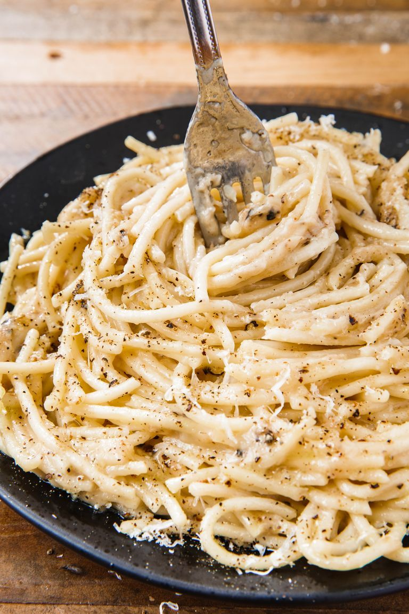

Cacio e Pepe

Italian for Cheese and Pepper
This dish is beautifully simple, yet greater than the sum of its parts. It's fast, delicious and easy to customize to fit whatever fresh ingredients in the fridge.
Ingredients
- 8oz pasta, Spaghetti or linguine is traditional, but use whatever you've got on hand
- 2tbsp butter
- 1 tsp salt
- 1 tbsp extra virgin olive oil
- 2-3 Tbsp whole milk, or cream (optional)
- Coarse ground black pepper
- 1/2 cup parmesan cheese, plus some for serving
- 1/2 cup pecorino plus more for serving
Directions
- add pasta to a large 10" - 12" saucepan or skillet. add enough cold water to cover, and season generously with salt
- If pasta is too long to fit, rest one side on skillet rim, add water to just above lowest point of pasta
- Bring pasta and water to a boil, gently agitating to prevent sticking. Once pasta begins to soften, it should bend into the shape of your pan. Don't rush here, broken pasta is a preventable trajedy.
- Meanwhile, grate parmesian and pecorino chesses, set aside.
- Once pasta water is at an aggressive boil, agitate constantly. Timing becomes critical here, eliminate distractions. Once pasta water is mostly reduced, test for doneness.
- Al dente, or "just cooked" is ideal here. If your pasta sill has a way to go, add a splash of water until cooked to your liking.
- Remove from heat. Your pasta should be looking creamy, with very little liquid left in the pan, and with minimal sticking.
- Now, add butter, and olive oil. an optional few tbsp milk will give a creamier texture. Gently toss with tongs to combine.
- Add most of the grated cheese and black pepper, reserving some of each for serving. Toss to combine.
- For serving, using tongs, gently twist onto a plate, garnish with remaining cheese and pepper.